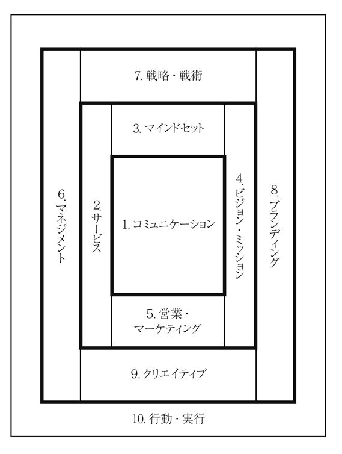

| 説得力の武器 | |
| 川辺 秀美 | |
| クロスメディア・パブリッシング(インプレス) (2011) | |
この本は縦書きでレイアウトされています。
また、ご覧になる機種により、表示の差が認められることがあります。
株式会社クロスメディア・パブリッシング
説得力の武器
川辺秀美
言葉が聖なるパワーを失ってからどれほどの時間が経過したでしょうか。
言葉は本来わたしたちの人生や仕事に大きな影響を与えてきました。
しかし、さまざまな情報が氾濫して伝達手段が多岐にわたることによって、その力は衰えていきました。
ところが昨今、一部の鋭い感性をもつ人々によって、再び「言葉の力」が脚光を浴びつつあります。それが、古典への回帰であり、格言集のブームへと進展していきました。
物語を読むことができなくなったわたしたちは、古典の叡智を格言として読むことで言葉を自分たちのものにしようとしています。Ｐ・Ｆ・ドラッカー、松下幸之助、ニーチェの空前のブームはそのことを示唆しているように感じます。
ただし、このような特定の偉人たちの言葉を読むだけで、わたしたちは「言葉の力」をものにできるのでしょうか？ 冷静に考えてみると、かなり偏差な世界観です。ビジネスパーソンの教養としてはあまりに狭すぎるし、わたしたち個人にとってどれほどの影響力があるのかというと、甚だ疑問です。
そこでわたしは、これらの偉人たちが何に影響を受けてきたのか？ という視点と、わたしたちがその格言を利用して「説得力」をもつには何が必要なのか？ という視点を熟考してみました。結論として導いたのは「神様」というコンセプトでした。つまり、「言葉に神性が宿ることによってパワーを生む」と考えたのです。
ビジネスと神様。
これは、ある意味、ビジネス書のタブーへの挑戦です。しかし、読者の方は冷静に考えてみてください。わたしたちは、事あるごとに「祈っている」のだ、と。仕事を成就するために祈らない人などいません。それは無神論者であろうとも、「それ」に対して祈っているのです。つまり、神様とは言っていないものの、虚空に祈りを捧げているのです。
じつは祈るという行為は、「契約」の始まりであり、「奉仕」の始まりであり、「礼儀」の始まりです。つまり、ビジネスをするための初期条件というものがすべてそろっているのです。では、このようなビジネスの基本となる考え方をわたしたちは知っているのか、または行っているのか、というと、きちんと把握されていません。
ビジネスの世界がグローバル化したなかで、わたしたちの仕事のしかたは否が応でも変わらざるを得ません。そのとき、わたしたちが拠り所とするものは何でしょうか。それは、やはり言葉の力なのです。
仕事の成果は、言葉に支配されています。そして、言葉から出ないものはありません。
言葉を統治できるものが影響力をもつことができる。
このことは本質であり、ビジネスにおいて絶対的な原則にも関わらず、目を背けられてきました。なぜなら、言葉のもつパワーを語る人間がいなかったことや、主にそれは宗教の役割だったからです。
宗教というものの神聖さが薄れ、言葉に魂が宿らなくなった今日では、言葉がたんなる道具となって、ありきたりの情報の一部になってしまいました。言葉の力を信じられなくなったわたしたちは、もはや剣をもたずに戦場で戦う兵士のようです。
本書は、世界中から叡智を結集し、ビジネスパーソンが仕事において説得力をもつ言葉を集めてきました。そして、その言葉があなたの剣として、悪いものを除去し、道を開くものとして機能するように三四四句を備えた、「最終兵器」としてここに甦ることになったのです。
仕事でトラブルに巻き込まれたとき。理不尽な目に出会ったとき。大きな失敗を起こしてしまったとき。
わたしたちの仕事は停滞し、悪い方向へ導かれていきます。よかれ、と思って打った策によって、さらに悪循環を起こし、負の連鎖をつないでいきます。
困難な状況に陥ったときは、「何もしない」ではダメですが、「何かをする」ことで解決するわけでもありません。そうではなく、基本原則に立ち返って行動しなければなりません。そんなときに「説得力の武器」を利用してもらいたいのです。
「説得力の武器」とは、そもそも自分という狭い思考から抜け出すための算段として用意された言葉の数々です。
わたしたち人類は何千年もの間、苦しみのなかでもがき、それを解決する方法を模索してきました。今わたしたちが経験していることは、人類が過去に何度も繰り返してきたことであり、その叡智は既に蓄積されているのです。
すごく簡単な真理ですが、わたしたちはその古人の叡智を素直に実行すればよいだけなのです。そして、その言葉が直接神様から発せられた言葉であれば、なお説得力をもつのです。「誰が言ったのか」「誰が書いたのか」とは、そもそも「説得力という武器」なのです。
もし、あなたがどん底の状況にあるならば、ここに記された言葉を音読してみてください。それはあなた自身の心に大きなパワーをもたらすはずです。なぜなら、そこには、神性が宿っているからです。
● 本書の構成と狙い
言葉は剣である。しかし、剣として使用するためには、その用途と処方を知らなければならない。
本書で記された三四四句は一つひとつ強力な武器として機能するものですが、ビジネスに必要なカテゴリーに分けることによって、より具体的に剣として機能できるようにしました。
1 コミュニケーション
2 サービス
3 マインドセット
4 ビジョン・ミッション
5 営業・マーケティング
6 マネジメント
7 戦略・戦術
8 ブランディング
9 クリエイティブ
10 行動・実行
本書にあるいくつかのわかりづらい格言には括弧書きで解説を示すことで、より使い方がイメージできるようにしています。なぜ「わかりづらい」のかは、その言葉には短いながら重層的な深い意味が隠されているからです。原文がもっている言葉の力を生かすために、あえてそのまま引用しているものもあります。
ただし、すべてを解説することは蛇足になるので、後の学習は読者に委ねることとします。そのために格言には必ず出典を明記しています。作品名が記されていない言葉は、その人の発言として残っているものです。
さて、言葉のセレクトですが、旧約聖書、新約聖書、中国古典（主に儒教）、仏教、ギリシア・ローマ神話、ユダヤ思想を中心にしました。また、現代において圧倒的な影響力をもつ人物の言葉を加えることによって、とかく堅くなりがちなテーマに彩りを添えることとしました。「言葉の神性」というテーマを広義にとらえ、自由な発想で編纂した人類の叡智を目指しました。
また、読者対象をビジネスパーソンとし、グローバル・コミュニケーション上の必須教養という意味も考慮しました。そして、なるべく複眼的な聖典にするために、あえてそのテーマで二律背反する言葉を併記している箇所もあることは予めお断りしておきます。
● 説得力の武器を使いこなすために
本書の構成は以上の十のカテゴリーから構成されています。
読み方は、「１ コミュニケーション」から出発し、「10 行動・実行」に至るまで時計回りの順番になっています。

この陣形はマンダラにならったもので、いわば究極の「守り」のスタイルです。マンダラとはそもそも魔除けの方陣なのです。
ビジネスとは「守り」であり、本書ではそのディフェンス力を鍛えるために様々な叡智を集めてきました。
まず読者にモノにしていただきたいのは「１ コミュニケーション」です。本書のメインといっても過言ではありません。ここで引用された古今東西の叡智は仕事に従事する者にとって基本原則です。
そして、次の陣形が「１ コミュニケーション」から「5 営業・マーケティング」までのセットです。この5つは仕事で成果を出すためのセットと考えてください。
「6 マネジメント」から「9 クリエイティブ」までの４つは、管理者のためのセットです。リーダーとして組織を引っ張る人たちは、ここまで揃えていただかないと「説得力」は発揮されません。
最後の「10 行動・実行」は前9つを生かすための武器であることは言うまでもありません。
ある企業の引っ越しのときでした。前日まとめた荷をほどいて、文房具や書類などを整理し、パソコンをセットします。
現代において、このパソコンが機能しないとすべての仕事が滞ってしまいます。早く仕事を再開させたいと思っているＫは、総務部のＩに詰め寄ります。
「いつになったらメールが通じるの？ 早く教えてね」
一度目の催促は、軽いジャブです。やや威圧的に。クールに攻めます。
しかし、お昼を過ぎ、夕方近くになっても、まだ回線はつながりません。Ｉのせいでメールが開通しないわけではないことはわかっていても、Ｋの怒りは止まりません。
「おい、まだ通じないのか。こんな簡単なことで手間取ってんじゃねえよ」
チンピラ風に凄むＫ。
「うるせぇ、お前一人のために会社が回ってんじゃねぇよ、こっちだって必死に対応してるんだ」
既に半泣きのＩ。
「お前はアホか。オレが言っているのは、『いつまで』に復旧するのかってことだよ。それくらいみんなに知らせなきゃ、困るだろう」
ここに出てきたＫとは、わたしのことです。もう五年ほど前のことになりますが、会社の中でこのような傍若無人な対応をとっておりました。わたしにとってコミュニケーションとは、どんな形であれ情報を伝達し、それによって成果を生むことだと考えていました。お恥ずかしいかぎりです。
わたしはみんなのイライラを代表する形で、あえて悪役を買って出たわけですが、このような対話によって生んだ良い結果は一つもありませんでした。
この章では、コミュニケーションの原則をまずつかんでいただきたいと思います。それは一言で言ってしまうと「慎んで聞く」ことです。言うは易し、行うは難しです。「聞く」というキーワードにフォーカスして一つひとつの言葉を味わってみてください。
至誠――まごころをもって人を感動させられなかったことは、
いまだかつてない。
「孟子」
遠く離れていても風の便りによって、
どこから花が舞い降りてきたのかを知ることができるものだ。
いつも見守っているから、あなたは心配しなくてもよい。
平将門
施しをするときは、右の手のすることを左の手に知らせてはならない。
あなたの施しを人目につかせないためである。
そうすれば、隠れたことを見ておられる父が、あなたに報いてくださる。
「マタイによる福音書 6-3,4」
ぼくはいつも神に感謝し続けるだろう。
仕事終りに、最高のご褒美をもらうのさ。
それはきみと、たった二人きりになれること。
ボブ・ディラン 「トゥ・ビー・アローン・ウィズ・ユー」
怒りがこみあがったときは「十」数えよ。
トーマス・ジェファーソン
不愉快なことばを多く聞いても、
尖ったことばで答えてはならない。
菩薩は敵対しないからである。
「スッタニパータ 九三二」
だれでも、聞くのに早く、話すのに遅く、
また怒るのに遅いようにしなさい。
人の怒りは神の義を実現しないからです。
「ヤコブの手紙 1-19,20」
怒った人が適切な助言を与えたことはない。
メナンドロス 「断片」
事柄に対して怒ってはいけない。
事柄はいくら怒っても意に介さないから。
ブルタルコス 「倫理論集」
沈黙は、会話の一大技術である。
ハズリット
これら四種類の友人は親友である。
①助けてくれる
②苦しいときも楽しいときもいっしょにいてくれる
③あなたのために本気で話してくれる
④同情してくれる
「シンガーラへの教え（二） 二一」
自分を苦しめず、また他人を傷つけないようなことばのみを語りなさい。
「サンユッタ・ニカーヤ みごとに説かれたことば 九」
神様にこのように尋ねてはいけません。
「ほんとうにわたしの願いを叶えてくれるのか心配なんです」
イディッシュ語の格言
耳は心の窓である。
イディッシュ語の格言
無益な語を多く話すよりも、
心が静まる美しい語を一つ聞くほうがすぐれている。
「ダンマパダ 一〇〇」
聞いて悟りなさい。
口に入るものは人を汚さず、
口から出て来るものが人を汚すのである。
「マタイによる福音書 15-10,11」
リーダーたるものは、他人が見ていないところでも心を慎み、
他人が聞いていないところでも、神を畏れること。
「中庸」
あなたたちは聞くには聞くが、決して理解せず、見るには見るが、決して認めない。この民の心は鈍り、耳は遠くなり、目は閉じてしまった。
こうして、彼らは目で見ることなく、耳で聞くことなく、心で理解せず、悔い改めない。わたしは彼らをいやさない。
「マタイによる福音書 13-14,15」
あなたは質問することを尊び、
ありふれた語の意味を吟味しつつ仕事に生かしなさい。
「中庸」
感性が真でないのなら、理性は偽りとなる。
ルクレティウス
眼が慣れてくると心もそれにともなって鈍り、
事物の存在理由を尋ねなくなる。
キケロ 「神々の本性について」
自分よりもはかるに劣っている者、賤しい者から学んで、
些細なこともおろそかにせず、日々黙々と学んでいく。
あなたはそのように仕事をしなさい。
「論語」
私は、上司から多くを学んだが、同僚からさらに多くを、
後輩たちからは、よりいっそう多くを学んだ。
「古代律法博士の格言と諺」
智慧を獲得するには、第一に沈黙すること。第二に聞くこと。第三に思い起こすこと。第四に実行すること。そして、一番重要なことは、他人に教えることである。
イブン・ガビロール
良書はあなたに読まれることを待っている。
ウンベルト・エーコ 「薔薇の名前」
人の上に立つときは、下の者の事情をよく知ることにつとめ、
人の下につくときは、まごころを込めてつくし、
人づき合いでは、相手に多くのことを要求しないこと。
「書経」
あなたは三つのサインによって人を判断することができます。
チップを渡すとき、お酒を飲んでいるとき、その時の酔っぱらいかた。
「タルムード」
ローマにいるなら、ローマ人のように行動せよ。
聖アウグスティヌス 「一月一日のための手紙」
教えることは二度学ぶことである。
ジョセフ・ジュベール 「随想録」
『論語』で弟子が質問したことばにあたったら、それをありありと想像し、自分と弟子を重ね合わせる。また、孔子の答えたことばにあたったら、実際に孔子が放った声を想像しながら読むこと。このように読んでいけば、自然とその思想を体得できるだろう。
「小学」
教えることは、自身の無知を学ぶこと。
「書経」
話すっていうのは、いいもんでなぁ。どんな苦しいことでも、話をすると少しは楽になる。たとえば、お前は無口で何も言わんたちらしいが、しかし、何か苦しいことがあったら隠さずに話すほうがいいぞ。まぁ、こんなときにぽつりぽつり話すのも悪くないもんだよ。
黒澤明 「七人の侍」
話したいという思いを鎮めなさい。
そして、むやみに話してはいけません。
ことばによる悪い行いを断ち、
ことばによって善い行いをしなさい。
「ダンマパダ 二三二」
すばやく答える人は、判断を間違えることもたびたびである。
イディッシュ語の格言
秘密をばらす者、中傷し歩く者、軽々しく唇を開く者とは、交わるな。
「箴言 20-19」
中級以下の人に、上級なことを言っても、ただ障害になるだけ。
「論語」
人間50歳を過ぎれば、だれもがその顔に人生の価値を宿す。
ジョージ・オーウェル 最期の言葉
テクノロジーとは道具である。
子供たちといっしょにそれらの技術を使いこなして、
彼らのモチベーションをあげる、
そのような教師がもっとも大きな役割を担うだろう。
ビル・ゲイツ
セイヤァー シュッ！
芸術的なラーメンの湯切り。職人の見事な手さばきは、何ひとつ無駄がなく、流れるように展開されていく。そして、わたしはその出来上がったいつものラーメンをすする。
何度食べても、一口目を食べた瞬間は感動的。
大将がつくったラーメンは特別です。そのサウスポーから繰り出される完璧な技は、
「あなたこそ、ラーメン界のイチローだね」
とつぶやきたくなります。
しかし、店ののれんをくぐった瞬間に、大将不在がわかると、今日は外れの日だとがっくりします。わたしの目前にあるのはまぎれもなく「つけ麵並」なのですが、まったく別の商品になっているのです。
この圧倒的な格の違いは、何なのだろう？ と思います。わたしは、これこそがサービスの本質なのだと感じています。
サービスというものは、そもそも人間の遺伝子の中に組み込まれたものであるのですが、その伝承は限られた人が得られるものなのです。ですから、そもそもサービスとは、一子相伝の世界、つまり宗家を受け継ぐように師から弟子へと面授（face to face）によって伝わっていくものなのです。
さて、本文を通して読んでいただくとわかることですが、サービスとは「愛」という言葉に還元できます。しかも、求めない愛です。ひたすら愚直に愛を与え続けることです。
対象に対して愛がなければ、サービスというものは型でしかありません。型でしかないサービスは心がないので、そのサービスは顧客に伝わることはありません。
愛の深さこそが、サービスの質につながります。
でも、いったい愛とは何でしょうか？
愛を信じるかい、アルフィー。
真実の愛がなくても生きてはいける。
でもね、アルフィー。
今まで知らなかった愛というものを見つけなければ、
人生の意味がないんだよ。
バート・バカラック／ハル・デイヴィッド 「アルフィー」
母が子供を命がけで護るように、
すべての生きとし生けるものに対して、
慈悲のこころを起こしなさい。
「スッタニパータ 一四九」
あなたができることを言い、
あなたがやれることで施し、
そして、思い切り抱きしめなさい。
イディッシュ語の格言
敵を愛し、自分を迫害する者のために祈りなさい。
「マタイによる福音書 5-44」
耐え忍ぶこと、ことばに愛があること、師に出会うこと、
仏教の教えを聞くこと――これが最高の幸せである。
「スッタニパータ 二六六」
あなたがたは敵を愛しなさい。
人に善いことをし、何も当てにしないで貸しなさい。
そうすれば、たくさんの報いがあり、いと高き方の子となる。
いと高き方は、恩を知らない者にも悪人にも、情け深いからである。
「ルカによる福音書 6-35」
あらゆる世界を探しても、自己より愛しいものはない。
そのように、他人にとっても、それぞれ自己が愛おしい。
だから、自分の利益のために他人を犠牲にしてはならない。
「サンユッタ・ニカーヤ マッリカー 八」
愛は忍耐強い。愛は情け深い。ねたまない。愛は自慢せず、高ぶらない。礼を失せず、自分の利益を求めず、いらだたず、恨みを抱かない。
不義を喜ばず、真実を喜ぶ。
すべてを忍び、すべてを信じ、すべてを望み、すべてに耐える。
「コリントの信徒への手紙一 13-4,5,6,7」
お客様は決して間違わない。
セザール・リッツ
神に近づく者は、神が存在しておられること、
また、神は御自分を求める者たちに報いてくださる方であることを、
信じていなければならないからです。
「ヘブライ人への手紙 11-6」
はっきり言っておくが、どんな願い事であれ、
あなたがたのうち二人が地上で心を一つにして求めるなら、
わたしの天の父はそれをかなえてくださる。
二人または三人がわたしの名によって集まるところには、
わたしもその中にいるのである。
「マタイによる福音書 18-19,20」
人が主に誓願を立てるか、物断ちをすると誓ったならば、
彼は自分の言葉を破ってはならない。
すべては、口にしたとおり、実行しなければならない。
「民数記30-3」
わたしたちは仕事自体を偶像にしてはならない。
むしろ仕事でもって神に仕えねばならない。
これを省みない人は、老年に至って精神あるいは肉体が蝕まれ、苦しむ。
カール・ヒルティ 「幸福論」
人にしてもらいたいと思うことは何でも、あなたがたも人にしなさい。
これこそ律法と預言者である。
「マタイによる福音書7-12」
自分が他人にしてもらいたいことは、他人にしてはいけない。
他人の趣味は自分とは同じではないかもしれないから。
バーナード・ショウ 「人と超人」
天におられるわたしたちの父よ、御名が崇められますように。
御国が来ますように。
御心が行われますように、天におけるように地の上にも。
私たちに必要な糧を今日与えてください。
「マタイによる福音書 6-9,10,11」
歌え、神に向かって歌え。歌え、我らの王に向かって歌え。
神は、全地の王。ほめ歌をうたって、告げ知らせよ。
（生かされていることへの感謝をし、それを具体的な形で示すことの喩え）
「詩篇47-7,8」
好きなことをしてもよい。ただし、他人より抜きん出よ。
ワロン語の諺辞典
「やりたいこと」ではなく、「できること」で貢献しよう。
イブン・ガビロール 「人格の改善」
高く売るのは罪ではないが、はかりを間違えるのは罪になる。
イギリスの格言
もしその人が職業によって心の静寂をえるのなら、ミュージシャンは音楽を、アーティストは芸術を、詩人は言葉を創り出さなければならない。
人は何か「できること」をすると同時に、
何か「しなければならない」ことで生きるのだ。
アブラハム・マズロー 「モチベーションとパーソナリティ」
今、もしあなたがわたしの声に聞き従い、わたしの契約を守るならば、
あなたがたは、すべての民の間にあってわたしの宝となる。
「出エジプト記19-5」
白髪の人の前では起立し、長老を尊び、あなたの神を畏れなさい。
「レビ記19-32」
神は人ではないから、偽ることはない。
人の子ではないから、悔いることはない。
民数記23-19
富は自分のために蓄えるときは禍が起こり、
世のために使うときは福となる。
二宮尊徳 「二宮翁夜話」
あなたがたの中で偉くなりたい者は、皆に仕える者になり、
いちばん上になりたい者は、皆の僕になりなさい。
人の子が、仕えられるためではなく仕えるために、また、多くの人の身代金として自分の命を献げるために来たのと同じように。
「マタイによる福音書 20-26,27,28」
確かに言っておくが、この貧しいやもめは、だれよりもたくさん入れた。あの金持ちたちは皆、有り余る中から献金したが、
この人は、乏しい中から持っている生活費を全部入れたからである。
「ルカによる福音書 21-3,4」
受けるよりは与えるほうが幸いである。
「使徒言行録 20-35」
十分支払う者が充分満足する。
シェイクスピア 「ヴェニスの商人」
物惜しみの心を抑えて、恐れに打ち克って、
貧しい人々に施し与えなさい。
「サンユッタ・ニカーヤ もの惜しみ 四」
あなたが達成したいと思うことを、他人にやらせてあげなさい。
常に相手のことを先に考えることが人の道である。
「論語」
富める人に聖典を貸す前に、貧しい人にその本を貸してあげなさい。
ユダヤの賢者
出直してくれ、明日あげよう、と友に言うな。
あなたが今持っているなら。
「箴言3-28」
貧しいなかであっても、分かち与えることができれば、
死にあっても滅びることはない。これは永遠の法である。
「サンユッタ・ニカーヤ もの惜しみ 五」
時はバブル時代です。わたしが新入社員時代のころ、カラー・スーツというものが流行っていました。新卒で入った会社はいわゆるギョーカイであったので、サラリーマンといっても、かなりカジュアルな格好をしていました。
『まっ、ギョーカイに入ったんだから、オレもいっぱしのスタイルできめなくちゃ』と、調子にのって、当時誰も着ていなかった淡い黄色のスーツを購入しました。しかも、ダブルです。天然だったわたしは、空気を読むことなく、そのスーツ姿で営業していました。
クライアントに行くたびに、
「御社はいいねぇ、服装が自由で」
などと皮肉っぽく言われても
「いやあ、どうも」
と褒められていると勘違いしていた始末。
しかし、ある日のことです。一階からエレベーターにのってドアを閉めようとすると、上司が脱兎のごとくスピードで飛び上がり、フライング・ニーパットを浴びせてくるではありませんか！ わたしは何が起きているのかさっばりわかりませんでしたが、
「お前は、なんていう服を着てやがるんだ！」
と捨てゼリフをはきながら、その上司は去って行きました。
わたしは上司からプロレス技をくらったことではじめて、どうやら自分が仕事人として勘違いしていることに気づきました。
鏡に映った自分を冷静に眺めてみると、ダブダブのスーツに身を包んだ、明らかにダサい男が立っていました。
自分の心を冷静に、正常に、などと言いますが、自分ほどわからない存在はありません。外的な気づきにせよ、内的な気づきにせよ、大きなインパクトが起こらないとマインドセット（ものの見方や視野）は変わらないものです。
疲れた者、重荷を背負う者は、だれでもわたしのもとに来なさい。
休ませてあげよう。
「マタイによる福音書 11-28」
この世は美しいものだし、人間の命は蜜のように甘い。
ゴータマ・シッダールタ
涙は流しても、心は不動であること。
ウェルギリウス 「アエネイス」
ヌマキウスよ、何ものにも動じないことが、
幸福になるための、たった一つの道だ。
ホラティウス 「書簡詩」
いつも喜んでいなさい。
絶えず祈りなさい。
どんなことにも感謝しなさい。
「テサロニケの信徒への手紙一 5-16,17,18」
成果を望む人は、それにふさわしい重荷を背負い、
喜びの境地と賞讃する楽しみを修める。
「スッタニパータ 二五六」
成功する人は忍耐する人。背きを赦すことは人に輝きをそえる。
「箴言 19-11」
私たちは神の王国に入るためには、多くの苦難を経なければならない。
「使徒言行録14-22」
この世で生きるなら、苦しみに耐えうるだけの心を備えなさい。
ミドラッシュ・レビティカス・ラッバ
生きている間に、過去にとらわれず、現在において自由であるならば、
あなたは未来に関しても思いわずらうことがない。
「スッタニパータ 八四九」
自分に罪がないと言うなら、自らを欺いており、
真理は私たちの内にありません。
「ヨハネの手紙一1-8」
心はパラシュートのようだ。なぜなら、開いたときにだけ機能するから。
ジェームス・デュワー
貧しい人々は、幸いである、神の国はあなたがたのものである。
今飢えている人々は、幸いである、あなたがたは満たされる。
今泣いている人々は、幸いである、あなたがたは笑うようになる。
「ルカによる福音書 6-20,21」
経験は、失敗という犠牲を払いながら、ゆっくりと教えてくれる。
J.A.フルード 「大問題についての小研究」
自然に帰れ。
ルソー 「エミール」
汝自身を知れ。
作者不明
思惑でなく、必定でなく、頑固でなく、執着のない心を。
「論語」
穏やかな心は肉体を生かし、激情は骨を腐らせる。
「箴言 14-30」
「あなた自身を信じること」それが成功の第一条件である。
C.F.ラミューヌ 「日記」
人間は、事物自体ではなく、
事物にいだく考えによって苦しめられている。
古代ギリシアの格言
自ら自己を高めるべきである。自己を低く評価してはいけない。
実に自己こそ最大の友であり、最大の敵である。
「バガヴァッド・ギーター」
人間の寿命には終りがあるが、技芸はどこまで極めても終りはない。
世阿弥 「花鏡」
志を高くもって行動している人は、孤立することはない。
必ずみんなが支えてくれる。
「論語」
人間と女神は、常に別々の企てをもっている。プブリリウス・シリウス 「格言集」
コヘレトは言う。
なんという空しさ、なんという空しさ、すべては空しい。
「コヘレトの言葉1-2」
あぁ、きれいな夜明けだった。あぁ、今日も暑ぅ、なるぞ。
（最愛の妻が亡くなったときに迎えた朝のセリフ）
小津安二郎 「東京物語」
「死にそうだ」などと、決して口にしないこと。
ディケンズ 「ピクウィック・ペーパーズ」
この世に存在するあらゆるものは、夢、幻、泡、影のようにはかない。
このようにすべてのものをイメージしてみよう。
「金剛般若経」
心に誠をつくる道。一つには「広く学ぶ」こと。
二つには「詳しく問う」こと。三つには「深く考える」こと。
四つには「はっきりと論じる」こと。五つには「心を込めて行う」こと。
「中庸」
願わない者は受け取らない。
フランスの格言
己の運を信じるものくらい、運の良い人間はいない。
ドイツの格言
君たちは、いつの時代でもそうであったように、
自己を確立せねばならない。
――自分に厳しく、相手にはやさしく。
という自己を。
そして、すなおでかしこい自己を。
21世紀においては、特にそのことが重要である。
司馬遼太郎 「二十一世紀に生きる君たちへ」
この世界は毎朝わたしたちに「新しさ」を届けてくれる。
――それは神様からの贈り物。
わたしたちは一日一日生まれ変われるのですから。
バール・シェム・トブ
貪欲は最高だ！貪欲は正義だ！貪欲は作品だ！
突き抜けた、貪欲こそ、世界を救う！
オリバー・ストーン
コンサルタントが一番好きな言葉です。ビジョンやミッションを語っていると、格好よく見えます。でも、そこに何があるのかというと、ほとんどは建前です。ビジョンとは「神の啓示」であり、ミッションとは「その教えの伝道」であるという意味をはたして理解しているのでしょうか？
わたしはサラリーマン時代にミッションステートメントを制作するチームに入ったことがありましたが、まったくばかばかしいものでした。議論した記憶もなく、ある特定の文章パターンに少しアレンジをした程度のものです。しかも、グループ会社のしがらみで入ってきたコンサル会社にお付き合いしなければならないなんて！
そんなミッションステートメントは誰も見返すことなく、ホコリをかぶったまま社長室に掲げられただけでした。
ビジョンやミッションというものは、ひとつの「光」ですが、その光を探し出すためには、暗闇であることが条件です。ですから、平時や順風満帆のときにはビジョンやミッションというものは見つけにくいものなのです。
じつはこのビジョンやミッションは、仕事になくても影響はさほどありません。しかし、ステージを大きく変えるときや、ハイパフォーマンスを実現するためには大きな動力になります。また、仕事で崖っぷちに立ったときなどは転換点になる可能性があります。
ところで、みなさんは、ビジョン・ミッションと言われて、答えることができるでしょうか？ ふつうは答えられないと思います。わたしも、現在のところ、答えることができません。
しかし、簡単に答えられないテーマだからこそ、悶々と考えることが大切です。なぜなら、その時間がビジョンやミッションを育てているからです。
即効性というのは逆に考えると、その効果の持続も短いものです。しかし、熟慮された言葉は永遠なのです。
それでは私めが、
あなた様のために上手い手立てをいたしてさしあげましょう。
「古事記」
あなたの気高い顔はあまりにも輝かしく、
人間の目にはぼんやりとしか映りません。
そして、それゆえに、私たちの視力には、
黒く落ち着いた「叡智」の色に覆われて見えるのです。
作者不明
空の鳥をよく見なさい。
種も蒔かず、刈り入れもせず、倉に納めもしない。
あなたがたの天の父は鳥を養ってくださる。
「マタイによる福音書 6-26」
空を飛ぶ鳥も私の使いなのだ。
もしも大空を鶴が鳴きわたるのを見たならば、
どうかその鳥に私の名を尋ねておくれ。
「古事記」
あなたの歩く道に足跡を見つけたとしたら、
それは神があなたを導いてくれているということ。
イディッシュ語の格言
神を信じるためには、神が存在しなければならない。
成功を望むなら、まず目的を決めなければならない。
ドストエフスキー 「悪霊」
神は行為だけを見ない。神はあなたの志を見る。
ゲレルト 「聖書歌」
自己の身体を空しくし、宇宙と一体となることが「安楽」である、
と聖者は見る。
このような考えは、世間の人々とは正反対である。
「スッタニパータ 七六一」
書物はいくら記してもきりがない。学びすぎれば体が疲れる。
すべてに耳を傾けて得た結論。
「神を畏れ、その戒めを守れ。」これこそ、人間のすべて。
神は善をも悪をも、一切の業を、隠れたこともすべて、
裁きの座に引き出されるであろう。
「コレヘトの言葉 12-12,13,14」
あなたがたは世の光である。山の上にある町は、隠れることができない。また、ともし火をともして升の下に置くものはいない。
燭台の上に置く。そうすれば、家の中のものすべてを照らすのである。
「マタイによる福音書 5-14,15」
信仰とは、望んでいる事柄を確信し、見えない事実を確認することです。昔の人たちは、この信仰ゆえに神に認められました。
「ヘブライ人への手紙 11-1,2」
過去のあなたは小さなものであったが、
未来のあなたは非常に大きくなるであろう。
「ヨブ記8-7」
くじは膝の上に投げるが、ふさわしい定めはすべて主から与えられる。
（くじ引きの起源となる言葉。公平な方法として取り入れてみるのも面白い）
「箴言16-33」
伝統はわれわれ一般素人のものでなければなりません。
特殊な専門家の権威的なおせっかいをすっぱり切りすてるべきです。
つまりモーレツに素人であることを決意した人間の手に
とりかえさなければならないのです。
岡本太郎 「日本の伝統」
直観的に嫌な予感がして、
申出を断ったり、約束を避けたりすることがある。
その啓示は神ともいうべき存在か。
「易経」
相手に尋ねるときは、あなたにとって切実な問題を質問しよう。
また、相手から相談を受けたときは、自分だったらどうするか？
真剣に考えよう。
そのようにしているとあなたのこころに「仁」が宿る。
「論語」
世界は「書物」だが、その読み方を知らない者には、
ほとんど役に立たない。
ゴルドーニ 「年ごろのむぎわら帽子」
かつてあったことは、これからもあり、
かつて起こったことは、これからも起こる。
太陽の下、新しいものは何ひとつない。
「コヘレトの言葉1-9」
何を望むべか。
お金をどう生かすか。
国家や民族にどのくらい貢献すべきか。
神は何を命じているのか。
わたしはこの世にどんな役目を与えられたのか。
わたしたちとは何か。
何のために生まれてきたのか。
ペルシウス
奉仕を主とする業は栄え、利得を主とする業は衰える。
ヘンリー・フォード
はっきり言っておく。
だれでもこの山に向かい、『立ち上がって、海に飛び込め』と言い、
少しも疑わず、自分の言うとおりになると信じるならば、
そのとおりになる。
「マルコによる福音書11-23」
働け、苦労せよ。これが間違いのない資本だ。
ジャン・ド・ラ・フォンテーヌ 「寓話」
わが子よ、蜜を食べてみよ、それは美味だ。
滴る蜜は口に甘い。
そのように、魂にとって知恵は美味だと知れ。
それを見いだすなら、確かに未来はある。
「箴言 24-13,14」
人は、食べるために生きるのではなく、生きるために食べるである。
キケロ
生きていることへの感謝でいっぱいの小説こそ、
不滅のものを持っている。
太宰治 「もの思う葦」
神々は奇数を好む。
ウェルギリウス 「詩選」
はっきり言っておく。もし、からし種一粒ほどの信仰があれば、
この山に向かって、『ここから、あそこに移れ』と命じても、
そのとおりになる。あなたがたにできないことは何もない。
「マタイによる福音書17-20」
わたしたちが体験できる美はミステリアスである。
なぜなら、すべての芸術や科学にはその源が存在しているからである。
アルバート・アインシュタイン
老いも若きも、心に確かな目標を定めて、みじめな老後の支えとせよ。
ペルシウス
何事にも時があり、天の下の出来事にはすべて定められた時がある。
「コヘレトの言葉3-1」
時が満ちれば、あなたの心が光となる。
空海 「遍照発揮性霊集」
守るべきことは簡単に行うことができて、
しかも広く行き渡ることができるもの。
それこそ、正しい道である。
「孟子」
天がなすべき仕事がある。人間はみな、それを代行している。
だから、わたしたちはみな、それぞれ天職についているのだ。
「書経」
天から降りて来た、鮮明な啓示。
まるで、自分名義でスイス銀行に大金が振り込まれたみたいだ！
ウッディ・アレン
みさなん、高野山に行ったことはありますか？
いまや熊野から高野山一体にかけて世界遺産に登録されているので、その地を訪れた方もいらっしゃるかもしれません。
しかし、よく考えてみると、世界中のあちこちで寺院というものは、隔絶した地に突如出現して、一体を街に変えてしまう力をもっています。不思議なことだとは思いませんか？
寺院の発生は、やがて産業の創出につながり、時代を経て会社という形に変ってゆきます。そのことを考えると、秘境をマーケティングしてみるというテーマもありかと思います。
たとえば、高野山には地元の人が行く食堂は数件しかありません。その中でも学生がひいきにしている店は「みっちゃん」です。中華屋さんなのですが、夜七時以降、飲み食べできる貴重な飲食店です。過疎化が進む人口四千人の町で、はたしてもう一店、地元に根ざした飲食店経営は可能でしょうか？ そういったセンスが問われているのが営業・マーケティングです。
わたしは新卒時に営業マンとしてデビューしましたが、このような数字の感覚がまったくもてませんでした。基本的に、営業マンというのも、特定の才能をもった人種です。ですから、なかなかマネできるものではありません。
しかし、どの職業においても今や営業・マーケティングセンスは必須の能力といってもよいものになりました。残念ながら、そのような発想はできません！ とは言えないのです。
プロフェッショナル営業の方には、モチベーションのあがる言葉を見つけてみてほしいと思います。また、基本原則というものを適宜見直していただくテキストとしてご利用ください。
そして、わたしのように営業職ではないけれど、営業感覚を磨きたい方には、ここに書かれた格言の数々をかみしめて実践してみてほしいです。
商売はお客がＮＯと言った瞬間から始まる。
エルマー・レターマン
商人やったら、お客さんからの信用が一番大事ですわ。
井原西鶴 「日本永代蔵」
商売とは最速であること。
ジョゼフ・アディソン 「古銭」
金儲けの好機は短い。
マルティアリス 「風刺詩集」
運命の女神は、亀のようにのろのろとやってきて、
ガゼルのように高速で飛んでゆく。
ペルシアの格言
黄河の水が澄むのをまっていたら、いくら寿命があっても足りない。
「左伝」
人間は栄華のうちにとどまることはできない。屠られる獣に等しい。
「詩篇49-13」
困難は目的に近づけば近づくほど、大きくなる。
ゲーテ 「箴言と省察」
困難に出会ったら、むしろ積極的に歓迎しよう。
「礼記」
思いきってやれば、めったにに不運に出会わない。
マチュラン・レニエ 「風刺詩集」
もう言葉はいらないんですね。
言葉を交わさなくても以心伝心で心が通じあう。
バァーッと、緊張感がみなぎり、
ダァーッと、一つの気持ちを察しながら、
そして勝負に入っていきましたね。
長嶋茂雄
よき羊飼いの務めは、羊の皮をはぐことではなく、
毛を刈り取ることにある。
スエトニウス 「ローマ皇帝伝」
『人はパンだけで生きるものではない。
神の口から出る一つ一つの言葉で生きる』と書いてある。
「マタイによる福音書4-4」
最も基本的なリサーチは、
私たちが無意識のうちにやっていることを調べることである。
ベルナー・フォン・ブラウン
知恵と知識は救いを豊かに与える。主を畏れることは宝である。
「イザヤ書 33-6」
真理を得よ、知恵も諭しも分別も手放すな。
「箴言23-23」
今言われていることで、かつて言われていなかったことはない。
テレンティウス 「無気力な男」
取引先のパートナーを判断する基準は三つある。
仕事のしかた、酒の飲み方、会話の中身。
ラビ・ナザン
何より大切なことは、まずは財産を築くべきである。
貧しくては生きていく甲斐もない。
豊かである人だけが人間らしい生活ができる。
財産を築くためには、まずその要諦を知るべきであろう。
吉田兼好 「徒然草」
金と云うものには、如何して手に入れたとか何になるとか、
其様な馬鹿面倒な話はヌキにして、
何時見ても云うに云われぬ人の
莞爾とする魔力があるものと見える。
徳富蘆花 「思い出の記」
利益をあげることが悪徳だというのは、社会主義的な考え方であり、
損失を招くことこそが悪徳であるのです。
チャーチル 「演説」
慎重な態度をとるより、積極的に行動したほうが余計に儲かる
ヴォーヴナルグ 「省察と箴言」
もし好機が到来しなかったならば、自ら好機を創り出せ。
サミュエル・スマイルズ 「自助論」
経営などということは、勝利を得なければ意味をなさない。
ディオール 「クリスチャン・ディオールと私」
好意が放たれても、そこに真実があるわけではない。
トーマス・ミドルトン 「オールド・ロー」
再びリベンジの機会をもらえるなら、誰もが勝者になることができる。
ジョージ・エイド
わたしの恵みはあなたに十分である。
力は弱さの中でこそ十分に発揮されるのだ。
「コリントへの手紙二 12-9」
アドバンテージをもっていたつもりが、
それ自身が足かせとなることがある。
ラテン語の格言
勝利をめざすひとの眼は、けっしてよそみをしない。
ディフィルス
惜しんでわずかしか種を蒔かない者は、刈り入れもわずかで、
惜しまず豊かに蒔く人は、刈り入れも豊かなのです。
「コリント人への手紙二9-6」
知識がなければ欲しても不毛だ。あまり足を急がせると過ちを犯す。
「箴言 19-2」
ビジネスを仕掛けるか、ビジネスに巻き込まれるか、
それはあなたが決めること。
ベンジャミン・フランクリン 「ブーア・リチャードの暦」
信仰と、希望と、愛、この三つは、いつまでも残る。
その中で最も大いなるものは、愛である。
「コリントへの手紙一 13-13」
賽は投げられ、運命は回り始めた。
カエサル
二十代のころを想うと、わたしはかなりめちゃくちゃな生活をしていたようです。
その頃は人生ではじめてゲームというものに熱中していました。『ファイナル・ファンタジー』や『ときめきメモリアル』にはまってしまい、仕事で深夜に帰宅するも、勢いゲームに没頭し、朝まで行うなどはざらでした。しかも、ヘビー・スモーカーで一日二箱以上あけていましたから、これで健康を害さないわけはありません。
三十代になると、わたしは次々と病を併発するようになりました。編集者としては致命的な目の病気、中心性網膜症にかかったり、デスクワークと運動不足がたたって、椎間板ヘルニアで一週間入院したこともありました。
人間は体力的な限界を知ったとき、はじめてマネジメントを意識するのかもしれません。
マネジメントという言葉は、わたしにとってセルフマネジメントのことであり、この章でも、そういった観点からさまざまな言葉を集めてきました。
マネジメントは習慣化と技術ですが、ある一定の段階までくると、「心」という問題にぶちあたります。
たとえば、タイム・マネジメントや目標管理は習慣によって定着しますが、根っこにある「心」という問題までは解決してくれません。このことは、心理学や精神科学によっても、無理だとわたしは思っています。悩みや苦しみは、いつまでたっても人生から消えることがないからです。
心というのはどこまで行っても果てがありません。答えのない虚空に答えを求めてみても、科学では限界があります。
しかし、既にその答えは世界のあらゆる宗教がもっています。とくに仏教は心を制御するためのアプローチがいくつも用意されていますので、ご興味のある方はぜひ研究してみてください。
どんなときでも笑顔でいられる人が、リーダーになる資格を持っている。
ナックマン・オブ・ブラストロー
何を守るよりも、自分の心を守れ。そこに命の源がある。
「箴言4-23」
恐れなければならならいただ一つのことは、
私たちが生み出す恐怖そのものである。
フランクリン・Ｄ・ルーズベルト
私はつねに仕事をしながら瞑想をします。
自分が言うべきこと、なすべきことを啓示してくれるのは、
天才ではなく、熟慮であり、瞑想なのです。
私はつねに仕事をしています。晩餐会でも、劇場でも。
ナポレオン一世 「レデールの『回想録』」
今日という一日のために働く習慣を作りなさい。
明日はひとりでにやって来る。
そして、新しい明日の力もまた来るのだから。
カール・ヒルティ 「仕事をする術」
仕事とは病と悲しみの治療法である。
パイロン 「近代論集」
もしも成功の秘訣があるとすれば、それは自分自身の立場からではなく、他人の立場から物事を見ることができる才能である。
ヘンリー・フォード
ふだんのとおりに仕事をすること。それが一番大切なことである。
チャーチル ギルドホールにおける演説
行動することなしに欲望するものは腐敗を産む。
モロワ 「結婚・友情・幸福」
今日をあなたの最期の日と思え。そうすれば毎日があなたの儲けとなる。
ホラティウス 「書簡集」
強い人ってどんな人？ それは感情をコントロールできる人のこと。
ベン・ゾーマ 「父の言い分」
現実の問題は二者択一ではない。
マーガレット・サッチャー
適宜に事をなし、忍耐づよく努力する者は財を得る。
「スッタニパータ 一八七」
ひとりよりもふたりが良い。共に苦労すれば、その報いは良い。
倒れれば、ひとりがその友を助け起こす。
倒れても起こしてくれる友のない人は不幸だ。
「コヘレトの言葉4-9,10」
重要な事は一人で決定してはいけない。
必ず多くの人々と議論してから行うべきである。
聖徳太子 「十七条憲法」
仕事の成果があったか、なかったで、評価が決まるわけではない。
怠けたことで、あなたの名誉が失われるのである。
ヘシオドス
むかしの例を見ても、あまりに早いうちから出世してしまうと、
晩年まで繁栄することはないようです。
紫式部 「源氏物語」
失敗の危険が一番大きいのは、
事業を始めるときや、目標達成が近くなったときである。
船の難破は岸の近くで起こる。
ペルネ 「箴言集」
失敗をしない人間とは、何もしない人間のことである。
エドワード・ジョン・フェルプス 演説
時間を大切にしない人は、
学ぶこともなければ、まじめにやることもないので、
才能が開くことも能力が発揮されることもない。
貝原益軒 「大和俗訓」
心は光よりも速い。
ルクレティウス
「監督の職を求める人がいれば、その人は良い仕事を望んでいる。」
だから、監督は、非の打ちどころがなく、一人の妻の夫であり、節制し、分別があり、礼儀正しく、客を親切にもてなし、よく教えることができなくてはなりません。
また、酒におぼれず、乱暴でなく、寛容で、争いを好まず、金銭に執着せず、自分の家庭をよく治め、常に品位を保って子供たちを従順な者に育てている人でなければなりません。
「テモテへの手紙一 3-1,2,3,4」
勇士よ、確かに心は動揺し、抑制され難い。
しかし、それは修行で完成される。
自己を制御しない者はヨーガの境地には達しない。
「バガヴァッド・ギーター」
あらかじめ考えをまとめますとか、じっくり考えますという人は、
たいていの場合、仕事を逃れる口実である。
さらに、たばこに火をつけたり、お茶を飲もうなどというときは、
なおさらである。
カール・ヒルティ 「時間を得る法」
あなたの欲しいものを買ってはいけない。必要なものだけを買いなさい。
カトー
財を散ずる六つの門戸とは何であるか？
①お酒を飲みすぎること、②夜のネオンに誘惑されること、
③コンサートやイベントに参加すること、④賭け事に熱中すること、
⑤悪友と遊ぶこと、⑥怠惰にふけること。
資産者の子よ、財を散ずるとは、このようなことである。
「シンガーラへの教え（二） 七」
財産のうちの四分の一の財をみずから享受しなさい。四分の二の財をもとにして、仕事を営みなさい。残りの四分の一は貯蓄しなさい。
「シンガーラへの教え（二） 二一」
自分自身の領分を知って、コントロールできないことを考えるな。
楠正成 「楠公家訓」
あなたが仕事において、幸福になる条件は三つある。
一、仕事が好きであること
二、仕事をしすぎないこと
三、仕事で成功するという思いがあること
ラスキン 「現代絵画」
必要以上に賢すぎてはいけない。ほどほどに賢くあれ。
モンテーニュ 「エセー」
雑学を知っているだけで、実行を伴わない者は、教える資格をもたない。
「礼記」
心を支配して楽しく生きる人は、次のように言う。
「私は今日も生きている。たとえ明日はユピテルが黒い雲で空をおおうとも、輝く太陽を照らすとも、どちらでもよい」
ホラティウス 「カルミナ」
統治するためには分割せよ。
マケドニア王フィリップ
凡人の集まりでも、団結すれば強くなる。
ホメロス 「イリアス」
能力のある人よりも、意欲ある人のほうが多くをなす。
ムーリエ 「格言の宝庫」
みんながそれぞれの利益を誘導するならば、組織は崩壊する。
「孟子」
天の声を聞いても、地の利がなければ成就しない。
地の利を得たからといっても、人の和がなければ成就しない。
物事が上手くいくには、天・地・人の三つが揃わなければならない。
「孟子」
勝利へ至る第一の秘訣は早起きである。
Ｔ・Ｗ・ウィルソン 講演
夜七時。戸山公園の木の下でぼっーと立っていました。
周りから見たら怪しげですが、これは立禅という中国拳法のトレーニングであり、最高の奥義でもあります。
中国拳法というのは、とても不思議な武術で、徹底的に「止まる」ことを身体に叩き込みます。
非常に逆説的な考えかたですが、「止まることこそ、最速である」ととらえているのです。つまり、常にバランスよく立つことができれば、素早く動くことができると考えているのです。
実際、立禅のトレーニングを一年ほど続けると、見違えるように素早く動けるようになります。
そして、最速の足さばきができれば、相手を思いきり殴らなくても倒すことができます。もっといえば、戦わずして勝つことが可能なのです。
戦略の本質とは、戦わないことではないでしょうか。戦いによって生むものは、憎悪であり、新たな戦いだけです。その真理はいつの時代も変わらないものです。
わたしたちが戦っている間は、修羅の道にいます。ですから、そこに存在するかぎり、修羅場からは逃れられません。
ひとつの戦略があたったとき、わたしたちはその勝利に酔いしれ、また新たな戦略を立てて、事にあたります。しかし、勝利し続ける戦いは歴史上存在しないのです。
旧約聖書を読んでみればわかることですが、人々が戦いにつぐ戦いによって得たものはないのです。史上最大の王と讃えられたソロモンでさえも、その栄華は続くことはありませんでした。
いま問われていることは私利私欲の戦略思考ではなく、もっとソーシャルでグローバルな考え方です。そのヒントをつかんでいただきたいと思います。
助けられてこんなことを言うのもなんですけど、
すぐ人を斬るのは悪いくせですよ。
あなたはなんだかギラギラしすぎてますね。そう、抜身みたいに。
あなたは鞘のない刀みたいな人。よく斬れます。
でも、本当にいい刀は鞘に入っているもんですよ。
黒澤明 「椿三十郎」
剣をさやに納めなさい。剣を取る者は皆、剣で滅びる。
「マタイによる福音書 26-52」
いつまでも剣の餌食とし合うのか。
悲惨な結末になることを知らぬわけではあるまい。
「サムエル記下2-26」
愛は決して滅びない。預言は廃れ、異言はやみ、知識は廃れよう。
わたしたちの知識は一部分、預言も一部分だから。
「コリント信徒への手紙一 13-8,9」
大きな成功をおさめようとしたら、何より思い切りが大切です。
モルトケ 「軍事著作集」
激しやすい人はいさかいを引き起こし、忍耐深い人は争いを鎮める。
「箴言15-18」
なまった斧を研いでおけば力が要らない。
知恵を備えておけば利益がある。
「コレヘトの言葉 10-10」
神に願をかけたら、誓いを果たすのを遅らせてはならない。
愚か者は神には喜ばれない。願をかけたら、誓いを果たせ。
願をかけておきながら誓いを果たさないのなら、
願をかけないほうがよい。
「コレヘトの言葉 5-3,4」
何事も長く続けていると、幸運に巡り合う。
「舞の本 信田」
あと一かご土を盛れば城が完成するのに、
そこであきらめてしえばすべては無駄になる。
土壇場でのこころの弱さが問題だ。
「論語」
物事を複雑に考えず、シンプルに、
そして、ありのままに見れば、
天下の真理をつかむことができる。
「易経」
物事に対して正面から考えずに、斜めばかり考え、
脇道にそれてしまってはいないだろうか。
それを異端というが、結局益よりも害が多いものだ。
ゆっくりでいいから道の真ん中を歩こう。
「論語」
一日二日という短い間にも変化の兆しは無数にあるものだ。
決して気を緩めてはいけない。
「書経」
朝、種を蒔け、夜にも手を休めるな。
実を結ぶのはあれかこれか、それとも両方なのか、分からないのだから。
「コレヘトの言葉 11-6」
一つのことをつかむのはよいが、
ほかのことからも手を放してはいけない。
神を畏れ敬えば、どちらをも成し遂げることができる。
「コレヘトの言葉 7-18」
銭が無い時あ狂人が洒落てらあ。
幸田露伴 「貧乏」
病的なほどサバイバルすることにこだわること。
アンドリュー・グローブ
死を覚悟して敵に挑む者は、むざむざと負けはしない。
ルカヌス 「ファルサリア」
このような苦しみも、思い出話として、
笑って語ることができる日が、いずれ来ることでしょう。
耐えていらっしゃい。
そして、女神が微笑んでくれる日のために、力を蓄えるのです。
ヴェルギリウス
狭い門から入りなさい。
滅びに通じる門は広く、その道も広々として、そこから入る者が多い。
しかし、命に通じる門はなんと狭く、その道も細いことか。
それを見いだす者は少ない。
「マタイによる福音書 7-13,14」
大きな仕事を企てるときには、偶然を考慮せざるを得ない。
ナポレオン一世
知識は獲得するだけでなく利用しななければならない。
キケロ 「善悪の限界」
カリアは、将軍の数が多すぎて敗北した。
ディオゲネス
事前に蔓や雑草を取り除いておかないと、
そのうち手に追えないくらい生い茂ってしまう。
そのように、些細なことでも、
小さな芽の段階で摘んでおくことが重要である。
「左伝」
戦う必要もないのに城を築くと、不思議なことだが、
その城を攻め落とそうとする敵が必ず出現してくる。
「左伝」
人の一生は重荷を背負って長い旅をしているようなもの。
だから、急いではいけない。不自由ではあることは当たり前だ。
つねに貧しく困った状態――最悪を想像するといい。
そうやって耐え忍ぶことを基本とし、怒りは敵と思いなさい。
自分を責めても他人を責めてはいけない。
自分の弱さを知ることは、過信するよりも、ずっと優れている。
徳川家康 遺訓
高等な戦術とは、遊戯のようなものです。
押しては引き、その流れの中で自然と動く。
しかし、遊戯といっても真剣に取り組むという意味なのです。
ブルース・リー 「燃えよドラゴン」
人を喜ばす技術だけが、出世する手段ではない。
退屈を我慢する技術こそ、成功する方法である。
シャンホール 「随想と箴言」
本業に精を出すときは、手は汚れない。
イタリアの格言
小さな揉め事は大きなカオスを巻き起こす。
イディッシュ語の格言
多くの仕事をこなす早道は、今すぐただ一つの仕事をすることである。
ロバート・セシル
何を与えるにしても、すばやく与えよ。
エンニウス
すべての卵を同じ籠に入れるな。
フランスの格言
将来に期待する勝利よりも、確実な平和のほうがよい。
ティトゥス・リヴィウス 「ローマ建国史」
この本に書かれている言葉をうまく引用することができれば、あなたはブランド人になれます。
米国では引用句辞典というものがたいへん発達していて、『バートレット辞典』や『スティーブンソン辞典』（絶版。但し、名言セレクトのセンスが抜群）といった歴史ある引用句辞典が存在します。未邦訳ですが、ある程度の英語力さえあれば読みこなすことはそれほど難しいことではありません。一家に一冊あると大変重宝します。
このような書物を眺めてみると、西洋の知というものがどのようなものなのかがわかります。最も多く引用されているのは当然のことながら聖書です。次にシェイクスピアとなっています。ですから、聖書とシェイクスピアの理解というのは、グローバル時代には欠かせない教養といってもよいと思います。
よく海外の小説や実用書などでは引用句を導入することがひとつのパターンになっています。とくに米国ではスピーチの際にも使われることが多いようです。
日本人と違って、彼らは過去の叡智を日常に生かすことがうまいですし、先人をリスペクトしています。そのような文化が日本にないことが問題ですが、本書を通して引用句をうまく仕事に取り入れてみることをおすすめします。
引用句をうまく使えると、「あの人はスピーチがうまい」または「あの人の文章には説得力がある」などと評判がたちます。
人間というのはおかしなもので、現実と仮想というものの区別がつきません。例えば、有名経営者はドラッカーやバフェットの言葉を、これでもか！ というくらい引用して饒舌にしゃべります。偉人というものの権威をうまく利用し、自分と同格化させ、聴衆に「なんだかあの人はスゴい！」と錯覚を起させます。このことはブランディングの基本です。
あなたもぜひお気に入りの存在を探しあて、その引用句をシチュエーションごとに使えるように考えてみてください。
マクシムスよ、どこにでもいるものはどこにもいない。
マルティアリス 「諷刺詩集」
天の仕事は、声もなく臭いもない。
（何も変化がないように見えても、刻々と物事は変わっている）
「中庸」
飾らずに自分の道を歩いていれば、しばしば二枚舌に打ち勝つ。
グレッセ 「意地悪」
誇示したり、反感を買ったりしなくても、賢者でいられる。
セネカ 「書簡集」
蛇のように賢く、鳩のように素直になりなさい。
（危機的な場面で強靭な意志と広大な慈悲を持て、という意味）
「マタイによる福音書 10-16」
王の前でうぬぼれるな。身分の高い人々の場に立とうとするな。
「箴言25-6」
個性は、個性的になろうとする意志から生まれるものではない。
独創的になろうと熱中している人は、間違っている。
その人は好きなものを模倣したにすぎない。
個性を発揮しようとすればするほど、
あなた自身とは似ても似つかぬものを生むだけだ。
ピカソ
野原の花がどのように育つかを考えてみなさい。
働きもせず、紡ぎもしない。
しかし、言っておく。栄華を極めたソロモンでさえ、
この花の一つほどにも着飾ってはいなかった。
「ルカによる福音書 12-27」
せっせと、がむしゃらに働きなさい。
正直に働くと愛らしい顔になるものだ。
トマス・デッカー
人間は偉くならなくとも
一個の正直な人間となって信用できるものになれば、それでけっこうだ。
真っ黒になって黙々として一日働き、
時期が来れば〝さよなら〟で消えていく。
このような人間を偉い人だと自分はいいたい。
鈴木大拙
孤独の中で、あなた自身があなたのための世間になれ。
ティブルス
髭は哲学者をつくらない。
ブルターク 「倫理論集」
誰が時代に選ばれるか？ なんて、わかりゃしない。
今は敗者かもしれいないが、未来は勝者かも。
そして、時代は変わりゆく。
ボブ・ディラン 「時代は変わる」
聖典の始めと終りは、愛の行為が書かれてある。
「タルムード」
天地は滅びるが、わたしの言葉は決して滅びない。
「マタイによる福音書 24-35」
リーダーが時代を治めるには、文章が根本である。
空海 「文鏡秘府論」
容貌は言葉である。
プブリリウス・シリウス 「格言集」
明日のことはを誇るな。一日のうちに何が生まれるか知らないのだから。
自分の口で自分をほめず、他人にほめてもらえ。
自分の唇でではなく、異邦人にほめてもらえ。
「箴言 27-1,2」
誉める、褒められるとはいったい何のことだ。人として当たり前のことをやっているのだから、別にほめられる筋合いはない。
そのことについて政府がほめるというのなら、
まずは隣の豆腐屋からほめてもらいたいもんだね。
福沢諭吉 「福翁自伝」
組織を束ねるのに「慈悲」のこころがあれば、
北極星のように不動の中心として星々がつき従っていくだろう。
「論語」
賢者はすばやく、一度だけ怒るべきだ。
プブリリウス・シリウス 「格言集」
人生において、わたしたちはピエロを演じなければならないときがある。
イディッシュ語の格言
世の中は芝居と同じで、自分の役をいかに演じるかだ。
パラダス 「風刺詩集」
我こそは、偉大なり。
モハメド・アリ
近い将来だれもがみな、15分で有名人になる日が来るだろう。
アンディ・ウォーホール
仕事の四分の三は、偶然の神によって行われる。
フレデリック二世 「ヴォルテールへの手紙」
瞬間を支配することは、人生を支配することだ。
エッシェンバッハ 「箴言集」
事物を従え、事物に従えられないようにせよ。
ホラティウス 「書簡詩」
与えた者は沈黙を守り、受け取った者は話したまえ。
セルバンテス 「模範小説集」
三人の女神たち、エウプロシュネ、アグライア、タレイアは、
有り難い贈り物を授けてくれます。
たとえば上品な態度や、親切なもてなし、甘美な装い、友愛の力、礼儀にかなったすべての行為、といったものです。
スペンサー 「神仙女王」
物の値打ちは、人がそう見せかけた値打ちにすぎない。
フランスの格言
ファッションとは、
さまざまなパーツを配分したアーキテクチャーである。
ココ・シャネル
立派な人々は説いた――最上の真理のことばを語れ。
「スッタニパータ 四五〇」
このような人は名声を得る。
①お布施すること
②やさしいことばを語ること
③奉仕すること
④協働すること
「シンガーラへの教え（二） 二一」
わたしたちの一生で、一番価値をもつのは道徳を生きることである。
次に価値をもつのは大きな事業を興すことである。
そして、三つ目は正しい言葉を残すことである。
「左伝」
よき説教師は人格者であり、
よき先生は時を司り、
よき本は世界を内包している。
そして、よき友人は神以外に存在しない。
イディッシュ語の格言
「自分の信じる宗教を輝かそう」と念じて、自らの宗教のみ賞揚し、
他の宗教を非難する者は、かえって自らの宗教を害うのである。
アショーカ王のことば
為せば成る、為さねば成らぬ成る業を、成らぬと捨つる人のはかなさ。
武田信玄 「家集」
今ではブログやツイッターなどによって、誰もが情報発信を手軽にできるようになりました。その一方で、文章や言葉が軽々しいものになっています。
言葉を司る職業についている身としては複雑な思いを感じています。
いま人類が直面するフェーズとして新しい時代に突入してきたようです。
文章を読んだり、書いたりする行為は、ある特定の人々に限られた表現だったのですが、インターネットが大衆化することによって、素人が影響力をもつ時代になりました。
しかし、わたしたちは「読む」「書く」という技術を学校教育のなかでまともに習ってきていません。そもそも「何を読むのか」という問題は、非常に大きなテーマであり、数多ある書物から選ぶことは至難の業です。そのことに加え、「書く」という行為は、その原則すらまともに習ったことがないので、さらにハードルは高い技術です。
クリエイティブの基本は語彙です。語彙が豊富であれば、組み合わせが多いということであり、それだけ繊細な思考や文章表現が可能です。アイデアが出ないという原因はほとんどの場合、この語彙の不足から出てくる問題だと考えています。
言葉が先かアイデアが先かという問題は、鶏が先か卵が先かという問題と似ていますが、言葉を知っているということはクリエイティブの障害を低くする力があります。
この章で学んでいただきたいことは、主に言葉のもつ神性についてです。言葉に対する敬意と崇拝がなければ、その言葉は生きず、作られたものに魂が宿ることはありません。
書かれた言葉や文章について、繊細に扱うようになると、クリエイティブの力はみるみる開花していきます。
人間は一匹の虫けらさえ作り出せないが、
一ダースもの神々を作り出している。
モンテーニュ 「エセー」
ぼくらは自由だ。
なんであろうと好きなことを言えるんだ。
それが間違っていようが、正しいことであろうが、
どっちだっていいんだ。
オアシス 「ホワットエヴァー」
すべての書物には、希望か絶望かが書かれている。
あなたはその言葉を、
読まずに飛ばすか、書きとめるかという選択ができる。
エイミー・ローエル 「剣の刃とケシの種」
初めに言があった。言は神と共にあった。言は神であった。
この言は、初めに神と共にあった。万物は言によって成った。
成ったもので、言によらずに成ったものは何一つなかった。
「ヨハネによる福音書 1-1,2,3」
オレって極致のバカかも。
でもね、神から贈られたバカなんだぜ。そして、
オレが創りだした作品はすべて神への尊厳から生まれたものなんだ。
マーク・トウェイン
新しいものとは、忘れていたものにほかならない。
ローズ・ベルタン
作品『笑い』 一週間笑い続ける。
オノ・ヨーコ 「グレープフルーツ」
作品とは自然の模倣を断じて出ることはできないのであって、
作品とは芸術家が心を虚しくして自然を受け納れる
その受け納れ方の刻印であるという事ができる。
小林秀雄 「文学と自分」
上手な模倣は最も完全な独創である。
ヴォルテール 「書簡集」
仕事をするとは、自然にある素材を変形し、あるいは移動して、
実用的なものに創りかえることである。
モロワ 「私の生活技術」
美はいたるところにある。
けっしてそれがわたしたちの眼前に欠けているわけでなく、
あなたの眼がそれを認められないだけである。
ロダン
デッサンと色彩は分けることができない。
彩色をほどこすにつれてデッサンが生き、
色彩が調和していくにつれてデッサンは明確になる。
セザンヌ
デッサンは物の形ではない。デッサンは物の形の見方である。
エドガー・ドガ
音楽は喜びを高め悲しみを静め、
病魔を追い払い、あらゆる苦しみをやわらげでくれる。
アームストロング 「健康を維持する術」
文章を読むときに一字にこだわって一句の意味を取り違えてはいけない。また、一句にこだわって文章の真意を取り違えてもいけない。
あなたの心と作者の心を通わせるようにして、
その本質をとらえるべきだ。
「孟子」
小説の技工上、噓のことをほんとうらしく書くのには、――或はほんとうのことをほんとうらしく書くのにも――できるだけ簡浄な、枯淡な筆を用いるに限る。
谷崎潤一郎 「饒舌録」
一つの事を現すのに一つの言葉きりないというように、一つの材料に対しては一つの手法、一つの気分、一つの態度を見出す事が必要だ。
それを見出すのが容易でない。調子がよければ一度でぶつかるが、まずく行くとそれが劫々見出せない。
書き出しに手こずる事のあるのはその為である。
志賀直哉 「革文函」
手紙の言葉遣いがぞんざいな人は、ほんとうにいやだ。
世の中をあまく見ていて、下品な文章がいやなのだ。
逆に、それほど改まって書く必要のない手紙に、
かしこまって書く人も、センスがないと思う。
清少納言 「枕草子」
正しく思考されたものであるかぎり、それは必ず明瞭な表現をとる。
ボワロー 「詩法」
良い言葉の一フレーズは、一冊の本に勝る。
ルナール 「日記」
言葉はすべての観念を止める杭である。
ピーチャー
写真は一枚で真実を語る。
しかし、映画は一秒間に二四枚もの真実を語る。
ジャン・リュック・ゴダール
言葉は人間にとって最高の処方箋である。
ラディヤード・キプリング
冒険家の生涯は不可能なことを可能にするレッスンである。
ウィリアム・ボリソー 「神に背く12人」
芝居の基本は、低い声で、ゆっくり、そして、しゃべりすぎないこと。
ジョン・ウェイン
究極の美は表現することができない。
フランシス・ベーコン 「格言」
美しいものには実用性がひそみ、その力は良質な作品を生み出す。
プラトン 「ヒッピアス」
詩的表現とは、創造主の言葉である。
サミュエル・ロジャース（伊）
神は言われた、「光あれ」。こうして、光があった。
神は光を見て、よしとされた。
「創世記1-3,4」
人生は歌で幕を閉じる。
ボーマルシェ 「フィガロの結婚」
会社を辞めたとき、ある起業家からこのようにアドバイスされました。
「すべては、自分を信じることから始まる」
わたしは未だにこの言葉が耳から離れずにいます。独立してから三年が経ったいまも、まだこの言葉に確信が持てずにいます。
自分を信じる。
この言葉ほど重い言葉に出会ったことがありません。
わたしは独立してから自身の事業を進めることと同じくらい、「自分を信じる」というテーマを乗り越えようと奮闘してきました。しかし、未だ断言できるところまで来ていません。
ライフワークとして研究している密教にも、じつは同じキーワードが出てきます。
自心仏です。
自心仏とは、わたしたちの心は既に仏の心が宿っており、見つけ出さなくても、既に大きな力を得ているんだ、という考え方です。
しかし、このような確信は、一つひとつの体験の中から徐々に形成されるものではないか？ と思います。
優れた能力のある人は、即座にセットできるのかもしれませんが、凡人であるわたしにはあまりに大きな問題です。
これは15ページに出てきたマンダラの中心テーマでもあります。
ここまで読んできたみなさんは、古今東西の叡智をどう感じたでしょうか？
まさか、すべて知っている、納得できた！ という人はいないと思いますが、一つでも心に響く言葉が見つかったら、とてもラッキーなことです。
行動・実行に確信がもてたとき、それは智慧となります。智慧こそがわたしたちが理想とすべき状態であり、「説得力の武器」が多くの人々を幸せな想いで満たす、野に咲く花へと変わる瞬間なのです。
あるラビは弟子に尋ねました。
「聖なる行為でもっと大切なものは何でしょうか」
「どんなときにでも瞬時に行動できることです」
ハシディックの格言
求めなさい。そうすれば、与えられる。
探しなさい。そうすれば、見つかる。
門をたたきなさい。そうすれば、開かれる。
だれでも、求める者は受け、探す者は見つけ、
門をたたく者には開かれる。
「マタイによる福音書 7-7,8」
人生においてためらうのは、ただ馬鹿か利口か、そのどちらかである。
ツルゲーネフ 「父と子」
考えるんじゃない、感じるんだ！
それは、月を指さすのと似たようなものだ。
指先に全神経を集めろ。
さもなければ、栄光は得られない。
ブルース・リー 「燃えよドラゴン」
いまはしゃべっているときではない。舵を操れ！
セネカ 「書簡集」
自分が考えた策にまだ疑問を感じるようならば、実行してはいけない。
「書経」
始めに立てた計画は、終始一貫、遂行せよ。
ホラティウス
明日の朝にしようなどと言ってはいけない。
朝が、仕事を仕上げて持って来てくれるわけではない。
聖クリソストムス
「いずれ近いうちに」は、いずれの日でもない。
イギリスの格言
たいへんな仕事だと思っても、まず、やってみなさい。
仕事に手をつけ始める、それで半分の仕事は終わります。
ところが、まだ後半分が残っていますね。
もう一度、やってみなさい。
ほら、終わっちゃいましたよ。
アウソニス
御言葉を行う人になりなさい。自分を欺いて、聞くだけで終わる者になってはいけません。御言葉を聞くだけで行わない者がいれば、
その人は生まれつきの顔を鏡に映して眺める人に似ています。
「ヤコブの手紙1-22,23」
思えば私は、なんという厭な、醜い、きたならしい国に出かけていったものだろう。私の身体はすっかり穢れてしまった。
禊ぎをしなければならない。
「古事記」
楽しみのないところからは、何も出てきません。
つまり、あなたが一番好きなものを勉強するのがよいのです。
シェイクスピア 「ロミオとジュリエット」
動物的であれ。あなたの本能に忠実であれ。
D.H.ロレンス「白孔雀」
他人に教えるとおりに、自分でも行え。
自分をよく整えた人こそ、他人を整えるであろう。自己は実に制し難い。自己こそ自分の主である。他人がどうして主であろうか？
自己をよく整えたならば、得難き主を得る。
「ダンマパダ 一五七―一六〇」
他人が一で成功するなら、わたしは百でそれを成し遂げる。
他人が十で成功するならば、わたしは千でそれを成し遂げる。
そのように他人の何倍も努力すれば大事を成し遂げることができる。
「中庸」
医者は誤診をごまかせるかもしれないが、
建築はクライアントの要望どおり建てることしかできない。
フランク・ロイド・ライト
生まれによって〈バラモン〉となるのではない。
生まれによって〈バラモンならざる者〉となるのでもない。
行為によって〈バラモン〉なのである。
行為によって〈バラモンならざる者〉なのである。
「スッタニパータ 六五〇」
難しいことはすぐにできるが、不可能なことには時間がかかる。
オランダの格言
仕事の技を磨くには、実行することと経験が必要だ。
コルメラ
ゆっくりと急げ。
アウグストゥス帝の教訓
何事も終わりを重視せよ。
世界共通の格言
勤勉な人はよく計画して利益を得、あわてて事を行う者は欠損をまねく。
「箴言 21-5」
経験は思想の子であり、思想は行動の子である。
ディズレーリ 「ヴィヴィアン・グレー」
レベルの高い仕事を極めても、その技術を実行するときは、
平凡に見える形まで落とし込んで行うべきだ。
「中庸」
自分の持ち物を売り払って施しなさい。
擦り切れることのない財布を作り、
尽きることのない富を天に積みなさい。
「ルカによる福音書 12-33」
あなたの職務は行為そのものにある。決してその結果にはない。行為の結果を動機としてはいけない。また無為に執着してはいけない。
「バガヴァッド・ギーター」
物事は、心を主とし、心によってつくり出される。
もし清らかな心で話したり行動すれば、福徳はその人につき従う。
――影がその体から離れないように。
「ダンマパダ」
ほどよい頃に起きて、好きな仕事を、愉快にやりにいこう。
シェイクスピア 「アントニーとクレオパトラ」
あらゆる行為を美しく。
マザー・テレサ モットー
ブログ、ツイッター、フェイスブックといった、新しいコミュニケーション媒体の登場によって、ビジネスパーソンは誰もが情報発信者にならざるを得なくなりました。そのことによって、わたしたちはかつてないほど「読む」「書く」技術を問われることになったのです。
スピーチの場で、メールでの挨拶やメッセージの場で、あなたが発する言葉が試されています。
しかし、わたしたちは「読む」「書く」教育をまともに受けたことがありません。ですから、「できない」ことは当然なのです。
かといって、仕事をしながら大量の読書をこなし、それをアウトプットするための文章術を学ぶ時間がもてるのか？ といえば、それも現実的な対処ではないでしょう。
まずは本書で提示された書物や人物をリサーチしてみることから始めてみてください。中にはインターネットで検索しても、ほとんど情報が取れないものもあります。しかし、もしあなたが仕事の現場でその引用句を使いたいと思うのなら、なんとしてでも探し当ててください。そのあなたの純粋な興味は、眠っていたあなたの才能を呼び覚まし、新たな世界へと誘う呼び水です。
とくに原典にあたることをお薦めするのは聖書です。聖書の理解というものは、グローバル・コミュニケーションでは欠かせない必須教養です。そして、聖書が素晴らしいのは、言葉に重層性があることです。聖書は独特の言語で形成されており、わたしたちが日常使用している言葉の定義とは全く異なっているため、その言葉に立ち止まらざるを得ないのです。
以上からわかるように、聖書はたんなる宗教書ではなく、わたしたちの思考力を「読むだけで」鍛えてくれ、言葉のセンスを自然と磨いてくれる道具なのです。読み物として史上最強の本であることは間違いありません。
また、仏教を中心とする日本文化についても、今熟考していただきたいテーマです。日本の文字文化は古事記から始まったといわれています。時は七一二年で奈良時代まで遡ります。欧米と比べると、かなり新しいです。この時代の日本語は四六駢儷体と言われる漢詩文で、中国・漢で流行した様式にならっています。古事記を原文で読むのは不可能だと思いますが、本書で取り上げた中国古典思想の原文にはぜひ当たって読んでいただきたいと思います。
なぜなら、中国古典思想が日本文化に与えた影響は計り知れないものがあるうえに、そもそもの漢字のルーツを知ることができるからです。しかも、漢文は一字一字の字間に深い意味があり、英語よりも遥かに想像力と教養が試されるのです。現代語訳つきの漢文を読んで、じっくりその意味を考え知性を磨くことは、「言葉の力」を伸ばす、非常によいトレーニングになります。
● 実践的に使いこなすために
言葉をわたしたちの仕事や生活に生かすための方法として、もっとも効果的なやり方は、たった一つ。
繰り返し、口にしたり、書いたりすることです。
ただし、毎日やっていただかなくてはなりません。人間というものは忘れっぽい生き物ですから、何度も何度も繰り返し行って、やっと身につくものです。やり方は、あなたが気に入った方法でかまいません。ノートに書くのもよし、朝晩に唱えるのもよし。
しかし、その時に一つだけ原則があります。あなたが口にしたり、書いたりした言葉に対して、「畏敬の念」をもつということです。そのような謙虚な態度で接すれば、言葉があなた自身の一部となる日が来るでしょう。
ラストに、この本にふさわしい言葉を添えて終わることとします。みなさんのビジネスライフのご多幸を祈って。
失敗につぐ失敗、そのおかげで、
バスチアンは正しい道を見つけました。
ミヒャエル・エンデ 「エンデと語る」
【 参考文献 】
・BARTLETTS FAMILIAR QUOTATIONS Seventeenth Edition John Bartlett Jastin Kaplan, General Editor Little, Brown
・THE HOME OF QUOTATION STEVENSON DODD,&COMPANY
・OXFORD DICTIONARY OF THEMANTIC QUOTATIONS OXFORD
・LEO ROTHTENS TREASURY OF JEWISH QUOTATIONS BANTAM BOOKS
・聖書 新共同訳 日本聖書協会
・聖書名言辞典 荒井献・池田裕 （編集） 講談社
・こころをよむ 仏典 中村元 NHK CD
・中国古典名言事典 諸橋轍次 講談社学術文庫
・ラルース世界ことわざ名言辞典 増補版 田辺貞之助監修 島津智編訳 角川書店
・世界名言全書 河盛好蔵編 (1)(5)(6) 東京創元社
・バガヴァッド・ギーター 上村勝彦訳 岩波文庫
・現代語訳 古事記 福永武彦訳 河出文庫
・エセー〈1〉〈2〉ミシェル・エイクム・ド モンテーニュ著 原二郎訳 岩波文庫
・完訳 ギリシア・ローマ神話 トマス ブルフィンチ著 大久保博訳 角川文庫
その他、数えきれないほどの文献、映画、ＣＤにあたりました。ここでは主なものだけをあげさせていただきました。さまざまなヒントとインスピレーションを与えていただいた、全ての書物や作品に感謝をいたします。
【著者略歴】
川辺秀美（かわべ・ひでみ）
株式会社スカイライター代表取締役 立教大学文学部ドイツ文学科卒業。高野山大学大学院修士課程密教学専攻。出版社で書籍編集長を経て独立。書籍編集に従事するなかでビジネス書から音楽書、科学書、写真集など幅広いジャンルを手がけ、10万部を超える異色の作品を数々送り出した。現在は「編集」というコンセプトを社会に還元するために、人材教育開発・執筆・出版エージェントを中心に活動している。国語力と仏教の復興こそが教育の根本と考えている。主な著作に『22歳からの国語力』（講談社現代新書）、『人を動かす文章術』（ＰＨＰビジネス新書）、『空海 人生の言葉』(ディスカヴァー・トゥエンティワン)などがある。メール info@skywriter.co.jp
説得力の武器
発行日 平成24年1月15日
著 者 川辺秀美
発行者 小早川幸一郎
発 行 株式会社クロスメディア・パブリッシング
〒１５０－００５１ 東京都渋谷区千駄ヶ谷４－20－３
東栄神宮外苑ビル
http://www.cmーpublishing.co.jp
（本の内容に関するお問い合わせ先）
ＴＥＬ ０３－５４１３－３１４０
ＦＡＸ ０３－５４１３－３１４１
発 売 株式会社インプレスコミュニケーションズ
〒１０２－００７５ 東京都千代田区三番町20
(C) Hidemi Kawabe 2011 Printed in Japan